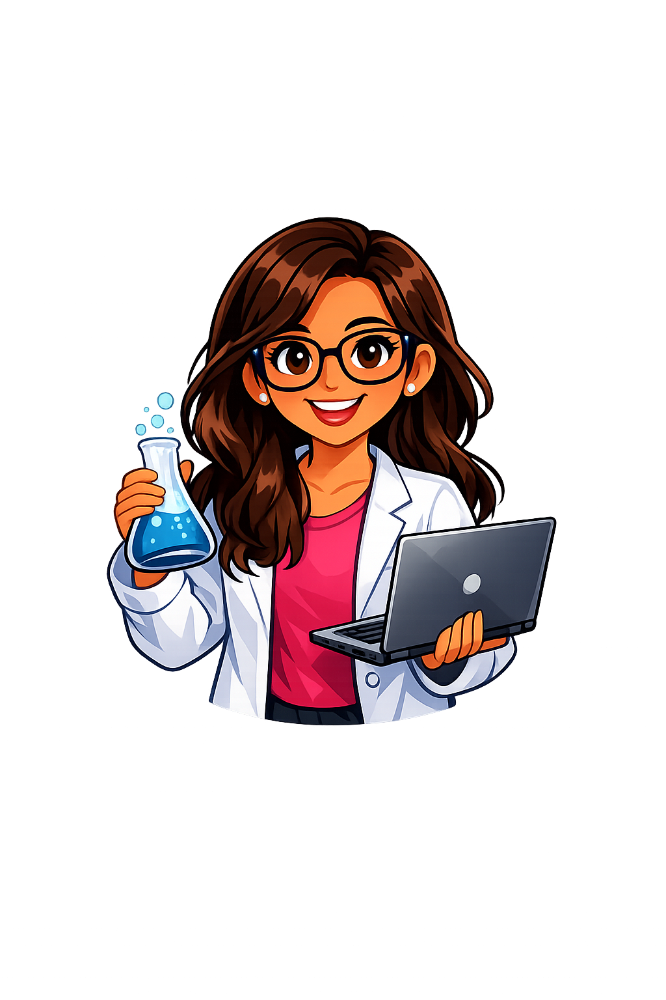

Hi! I’m Leara Kapuriya — the heart behind STEM Sister. I built this space to make science and technology exciting, creative, and accessible for every child, especially girls who dream of shaping the future.
Hello! I’m Leara Kapuriya, the creator of STEM Sister. Growing up, I often wished for a space where learning science and technology felt exciting, colorful, and welcoming. That dream inspired me to build STEM Sister — a platform that blends education with creativity, giving children the tools to explore, learn, and shine.
I believe learning should never feel intimidating. Instead, it should spark curiosity, joy, and confidence. Through STEM Sister, I share resources, quizzes, and interactive lessons that make STEM approachable and engaging.
Encouraging children to ask questions, explore ideas, and discover the joy of learning.
Creating a safe, supportive space where girls feel confident to pursue STEM dreams.
Making resources available to underprivileged children so no one is left behind.
Showing how science, technology, engineering, and math connect beautifully with art and imagination.
🌸 I love blending science with creativity.
🎨 My favorite color palette is purple, pink, and teal.
📚 I believe learning should always feel like an adventure.
🌍 My dream is to see more girls leading in STEM fields worldwide.
💡 I enjoy coding, designing, and creating interactive experiences.
🎶 Music and art inspire my approach to teaching and learning.